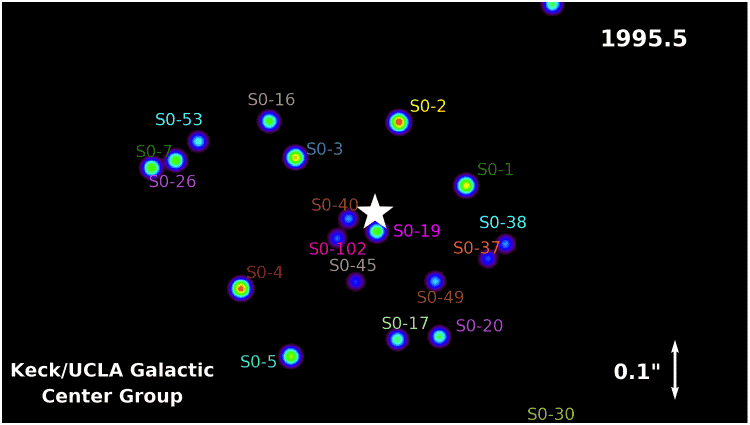
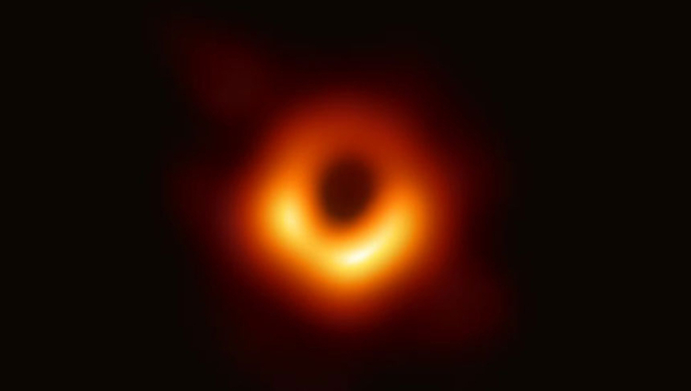

The Giant's Shadow
April, 2019
As you've probably heard by now, the long-awaited results of the Event Horizon Telescope (EHT) have been announced- and we have for the first time ever imaged the area directly surrounding a black hole. This is a pretty astounding result for physics, and is further evidence for the existence of black holes as more than a mathematical phenomenon. However, there have been indications of the existence of black holes for quite some time. There are scores solutions to the Einstein field equations indicating their existence. The LIGO results pretty definitively determine the existence of gravitational waves, at strengths consistent with Einstein's theory applied to a black hole merger. UCLA's Galactic Center Group under the direction of Andrea Ghez performed observations around the center of the Milky Way at an object referred to as "Sagittarius A*" (and often abbreviated to Sgr A*) which produced the following image:

This, though, is the first direct image of a black hole's environment ever constructed, and an very convincing result- all but confirming the existence of black holes in nature. Not that there were many doubters left! Here's a look:

I think this image is pretty fascinating. However there are a lot of things the interested though untrained eye might miss, misinterpret, or not understand. I'm going to address some of the questions the gifted amateur might have: How was this image made, why is it so blurry, what is that ring around the shadow, and why is it so uneven?
We'll start with the first question. This image was created using data collected from 8 different observation stations in 6 locations in April of 2017. They used a technique called "very long baseline interferometry" in which signals are combined respecting the time-difference between receipt of the signals in such a way that emulates a telescope that is as large as the distance in between the observing stations. Given the seperation of the telescopes, and thanks to the Earth's rotation, this has effectively given the researchers an Earth-sized telescope with an observational wavelength of 1.3mm (which puts it in the class of "extremely high frequency" microwaves). The data, once collected, was flown to the Max Planck Institute for Radio Astronomy in Bonn, Germany and the Haystack Observatory in Westford, Massachusetts. The daunting quantity of analysable data needed to be physically transported to these research stations- there was simply too much to practically transfer electronically.
The data was processed using two sets of algorithms that account both for the under-constrained circumstances due to the sparse population of detectors on the globe and for the lack of optimal phase calibration resulting in some large uncertainties in amplitude callibration. The first set of these algorithms are called "CLEAN" algorithms, which were first devised by Jan Högbom in 1974. The algorithm finds the strongest signal and convolves it with a "point-source function", and then reduces the gain from this convolution from the image. This process acts as an interative noise-reduction process. The second set of algorithms used are called "regularized maximum likelyhood" (RML) algorithms that conform to the observed results, but try to interpret the data in a way that adhere to certain desired properties- smooth and compact images being expected in the case of a black hole. Both research teams (acting independently to avoid crossover bias) came up with similar images of an asymmetric ring around a large, dark spot. This process was repeated along different "pipelines"- different fabrications of the images using distinct methodologies.
You can read more about the RML algorithms, first developed by Narayan and Nityananda in 1986 and developed extensively by Honma et. al., Bouman et. al., Akiyama et. al., and Chael et. al.. In particular, you can read this profile of Bouman's work (while she was still a Ph.D. student) here.
The blur is pretty stragihtforawrd to answer- for one thing, there's a small gaussian blurring effect added to each of the images to account for the differences in angular resolution across the different pipelines. The image of the black hole above is the average image across all three pipelines. The main contribution to the blur, however, is due to the fact that the object being viewed is astoundingly far away and, while very large by itself, does not compare in size to its distance from Earth. Even with an effective telescope diameter the size of the earth, it's very difficult to get a high-resolution image in the short timespan in which the data was being collected.
Now why do we see an asymmetric ring around the black hole? The ring is comprised of plasma and light that has escpaed from its orbit around the black hole- and warped into a ring around the black hole's shadow by a process called gravitational lensing. The space around the black hole is bent in such a way that it curves the light around it, bending its trajectory, and resulting in this ring we observe. But why the asymmetry? This arises due to the fact that the black hole itself is rotating- in this case, clockwise! The rotation of the black hole serves to doppler boost the plasma coming from the side moving towards the observer, and to doppler dim the plasma coming from the side moving away from the observer. Pretty neat, huh? Now, normally this effect would be very small. We don't typically see this kind of stuff happening about rotating massive objects in the night sky- the noticeablility of this effect hinges on the fact that the rotations are incredibly fast: almost at light speed!
This is an inspiring feat of science, and a testament to the effectiveness of collective efforts. With an interdisciplinary team including hundreds of scientists, engineers, and programmers based in North and South America, Asia, Africa, and Europe, and with observatories just as far flung, this project and its staggering results are an incredible display of the sheer power of international cooperation.
On a personal note, I am lucky enough to know some of the authors. I want to congratulate Professor Avery Broderick, whose wisdom I was fortunate to benefit from while he was my instructor in stellar astrophysics in 2015. I also want to congratulate my friends Chunchong (Rufus) Ni, with whom I spent many late nights working at the physics building on Waterloo campus, and Paul Tiede, from whom I have sought advice and direction more than once. They are some of the hardest-working people I know. With this, their efforts have more than paid off.
For further interest, and for those with the background to understand the details, the papers may be found here. They're totally open, and free to access without institutional credentials courtesy of the Intitute of Physics.